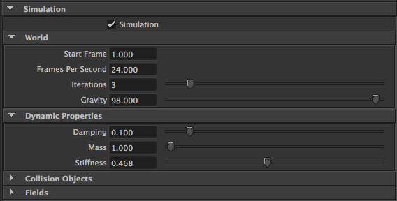
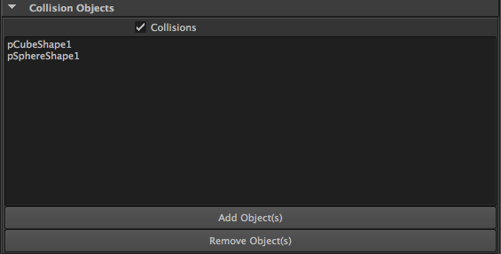
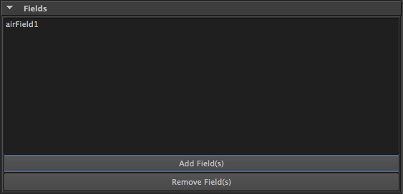
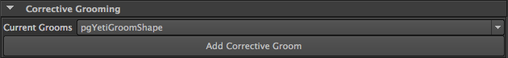
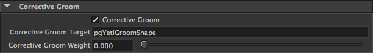

Simulation in Yeti is applied at the strand level, this means that it is the Groom nodes that control the simulation and each groom node can do so differently. Within the context of simulation there is the strands dynamic properties, collision objects and the ability to use Maya fields to apply forces.
Simulation is turned on and off with the Simulation toggle in the Simulation palette of a Groom.
World attributes control how the simulation runs and Dynamic properties control the strands physical properties.
Note
Some parameters can be controlled by painting specific per strand attributes, these are listed below for each individual parameter. A sim_simulate attribute can also be used to turn simulation on or off on a per strand basis, if the value is below 0.5 then no simulation will be run on the strand.
| Parameter | Description |
|---|---|
| Start Frame | controls at which frame Yeti should start running the dynamic simulation. |
| Frames Per Second | defines the time step used to run the simulation, you generally want this to reflect your current FPS in Maya but may also be used to slow down or speed up the dynamic motion. |
| Iterations | the number of times internal constraints are applied each simulation step, lower values result in springy strands that may not collide as desired. If a simulation “blows up” ( the motion isn’t as expected, usually resulting in a mess ) then it’s a good idea to increase the iterations to provide a more accurate solve. |
| Gravity | sets the gravity applied to the simulation. You can set this to 0 and rely on Maya’s gravity field if desired. |
| Parameter | Description |
|---|---|
| Damping | the amount of damping to apply to the dynamic forces |
| Mass | the expected mass of the strand, this can be set on a per strand basis by painting a sim_mass attribute. |
| Stiffness | how stiff the hair is, this can be set on a per strand basis by painting a sim_stiffness attribute. |
By default a groom will not collide with any of the objects in the scene, including the surface the strands have grown from.
All collision objects have to be explicitly added by opening the Collision Objects palette and using the Add Object(s) button to select which objects will affect the strands.
Once an object has been added to a Groom as a collision object Yeti will add a Collision Friction attribute which can be used to control how collisions with the object will affect the motion of the fibres if/when they collide.
You can also use the Collisions toggle to completely ignore all of the objects in the list if desired.
It’s possible to use Maya’s dynamic field node to affect the strands, to do so they just need to be added to the Fields palette via the Add Field(s) button which gives you the option of selecting any number of fields present in the scene.
Corrective grooming is a non-destructive way of making changes to a groom, usually after the hero groom has been published and either been applied to an animated character or post simulation. In some cases the fur may not look ideal in certain poses and thus an artist can create a corrective groom to fix the appearance of the fur in that pose.
This will work whether you’re using a cache, GRM file or just working on the original groom file.
To begin you will have to open up the Corrective Grooming palette on the pgYetiMaya node you’d like to apply the correction too - select the groom you would like to correct and press the Add Corrective Groom button.
This will create a new groom node in your scene which can be used to adjust the current groom - by default this has no effect and you will need to adjust the groom weight.
Adjusting the groom weight is as easy as selecting the new corrective groom and opening the Corrective Groom palette, in here is a value slider named Corrective Groom Weight that can be used to blend the updated groom on or off ( and animated! ).
The other values are un-important at this time.